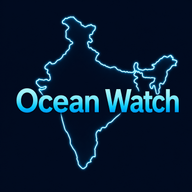
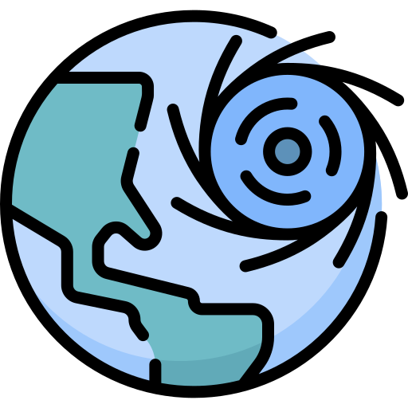

High Wave
Warning
—
Alert
—
Watch
—
No Threat
—

Ocean WatchTsunami · Cyclone · Storm Surge · Ocean State Forecast · Potential Fishing Zone
A state may appear under multiple levels because district and coastal-stretch conditions differ.

INCOIS-IMD Joint Bulletin
When checked IMD CAP Alerts feed.
Forecast — · Valid through —
Under Beta Testing